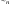
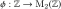
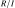
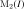
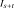
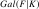
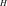
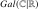

Esercizi di varia natura
Un po’ di teoria degli anelli
Caveat. Tutti gli anelli hanno un’identità moltiplicativa. Gli omomorfismi di anelli devono mandare l’identità nell’identità.
- Dimostrare che in un anello l’identità moltiplicativa è unica.
- Se è l’anello degli interi, ed , definiamo su la relazione di equivalenza che dice che se e solo se è un multiplo di
 . Dimostrare che
. Dimostrare che -  è una relazione di equivalenza su che è compatibile con le operazioni, ossia se allora , e per ogni .
- l’insieme delle classi di equivalenza rispetto a , , si chiama anello delle classi di resto modulo , e ha (infatti) una struttura di anello: come si definiscono le operazioni di somma e prodotto tra due classi di equivalenza?
- L’insieme ha esattamente elementi, dati dalle classi di equivalenza .
- Sia
 un anello, e
un anello, e  ; dimostrare che se è invertibile, allora
; dimostrare che se è invertibile, allora  è invertibile; se il prodotto è invertibile, lo sono sia che
è invertibile; se il prodotto è invertibile, lo sono sia che  ?
? - Dimostrare che un anello commutativo finito (=con un numero di elementi finito) che sia anche un dominio di integrità, è un campo.
- Sia
 un insieme, e consideriamo l’insieme
un insieme, e consideriamo l’insieme  di tutti i suoi sottoinsiemi; dimostrare che è un anello se definiamo la somma come la differenza simmetrica di sottoinsiemi, e il prodotto come l’intersezione. Un anello si dice booleano se per ogni ; è vero che per ogni anello booleano esiste un insieme tale che ?
di tutti i suoi sottoinsiemi; dimostrare che è un anello se definiamo la somma come la differenza simmetrica di sottoinsiemi, e il prodotto come l’intersezione. Un anello si dice booleano se per ogni ; è vero che per ogni anello booleano esiste un insieme tale che ? - Dimostrare che se è un anello, e un suo elemento ammette due inversi sinistri distinti allora ne ha infiniti.
- Dimostrare che l’intersezione di un numero arbitrario di ideali è ancora un ideale di .
- Dimostrare che dato un sottoinsieme
 di un anello , l’ideale generato da coincide con
di un anello , l’ideale generato da coincide con - l’intersezione di tutti gli ideali di che contengono ;
- l’insieme (cioè con le somme finite di elementi della forma ). Si denota con o con .
- l’intersezione di tutti gli ideali di
- Il prodotto di due ideali è l’ideale generato dall’insieme dei prodotti . La somma di due ideali è l’ideale generato dall’unione . E’ vero che ?
- Nell’anello , descrivere gli ideali (chiamo l’ideale generato dal singoletto ); esiste un ideale di che non sia della forma per qualche
 ?
? - Sia  la mappa che manda nella matrice . E’ un omomorfismo di anelli?
- Aprire un libro di algebra lineare, e leggere la dimostrazione che ogni spazio vettoriale ammette una base; dove si sta usando l’ipotesi che lo spazio vettoriale sia definito su un campo?
- Dimostrare il primo teorema di omomorfismo per anelli: se è un omomorfismo di anelli, esiste un isomorfismo tra l’anello quoziente  (leggere la definizione da un libro di algebra) e l’immagine di .
- Dimostrare che esiste una biiezione tra l’insieme degli ideali di un anello che contengono un ideale fissato , e l’insieme degli ideali dell’anello quoziente .
- Un elemento di un anello si dice nilpotente se per qualche , idempotente se , e centrale se per ogni . Mostrare che se è un omomorfismo suriettivo di anelli, manda elementi idempotenti in idempotenti, nilpotenti in nilpotenti, e centrali in centrali. Dove si sta usando l’ipotesi di suriettività?
- Sia l’anello dei polinomi a coefficienti interi; sia l’anello delle matrici a coefficienti in . Dimostrare che per ogni ideale di , il sottoinsieme  delle matrici a coefficienti in è un ideale di ; dimostrare che ogni ideale di è di questa forma. Dimostrare che .
- Il centro di un anello è l’insieme di tutti i suoi elementi centrali. Dimostrare che il centro di un anello semplice (un anello senza ideali bilateri diversi da ) è un campo.
- Dimostrare che un omomorfismo di anelli tra anelli semplici è iniettivo (deve mandare 1 in 1…).
- L’insieme degli elementi invertibili di un anello è un gruppo (per definizione…); quali sono gli elementi invertibili dell’anello ? Quali sono gli elementi invertibili dell’anello ? C’è un motivo per cui quando è primo tutti gli elementi non nulli di sono invertibili?
- La caratteristica di un anello commutativo è il minimo intero tale che , e se tale minimo non esiste. Mostrare che non esiste un omomorfismo di anelli tra
 e . Mostrare che se è un dominio di integrità, allora la sua caratteristica è un numero primo.
e . Mostrare che se è un dominio di integrità, allora la sua caratteristica è un numero primo. - Un anello si dice noetheriano se ogni catena di ideali
 è stazionaria, ossia esiste un indice tale che e per ogni . Dimostrare che
è stazionaria, ossia esiste un indice tale che e per ogni . Dimostrare che - Un anello è noetheriano se e solo se ogni suo ideale è finitamente generato;
- Un anello è noetheriano se e solo se ogni famiglia di ideali indicizzata da un insieme non vuoto ammette un elemento massimale (ossia esiste un tale che se , allora ).
- L’anello è noetheriano? L’anello è noetheriano?
- Dimostrare che se è un ideale di , se è noetheriano lo è il quoziente .
- Un ideale di un anello si dice massimale se non è contenuto in nessun altro ideale proprio; dimostrare che ogni anello ha un ideale massimale (usare l’“assioma della scelta”: se è un insieme parzialmente ordinato, tale che ogni catena
 ammette un elemento massimale, allora ammette un elemento massimale).
ammette un elemento massimale, allora ammette un elemento massimale). - Nell’anello
 delle funzioni continue (con le operazioni di somma e prodotto definite da e ) mostrare che
delle funzioni continue (con le operazioni di somma e prodotto definite da e ) mostrare che - L’insieme delle funzioni è un ideale massimale.
- , definito analogamente come per , è ancora un ideale massimale. E’ vero che per ogni gli ideali sono isomorfi? Chi è il quoziente ? C’è relazione tra la somma di ideali e l’ideale ? E per quanto riguarda il prodotto? è noetheriano?
- Sull’insieme delle funzioni dotato della somma puntuale e dell prodotto di convoluzione: c’è o no una struttura di anello? Se sì, rispondere a tutte le domande precedenti per questo anello: è un ideale? Gli sono tutti isomorfi? E chi è il quoziente ? è noetheriano?
- Stesse domande dei due esercizi precedenti, fatte però per un sottoinsieme finito con più di un elemento, e per l’ideale (mostrare che non è massimale: in quale ideale proprio è propriamente contenuto?). Stesse domande per gli ideali , definiti per un sottoinsieme finito di . Dati due sottoinsiemi finiti
 , che relazione esiste tra ? E’ chiaro che questo suggerisce una relazione tra e se ha elementi… :-) qui comincia la geometria algebrica.
, che relazione esiste tra ? E’ chiaro che questo suggerisce una relazione tra e se ha elementi… :-) qui comincia la geometria algebrica. - Esiste un campo con elementi?
- Sia
 un campo; una estensione di è un altro campo
un campo; una estensione di è un altro campo  che contiene una copia isomorfa di . Dimostrare che un’estensione di equivale al dato di un omomorfismo di anelli . Si indica un’estensione con la notazione .
che contiene una copia isomorfa di . Dimostrare che un’estensione di equivale al dato di un omomorfismo di anelli . Si indica un’estensione con la notazione . - Data un’estensione , il gruppo di Galois di su , denotato , è il gruppo degli automorfismi di che, ristretti a , sono l’identità: le estensioni intermedie tra e sono tutti i campi  tali che .
- Dimostrare che esiste una coppia di funzioni , definite come segue: manda un’estensione intermedia tra e nel sottogruppo di i cui elementi sono i tali che ristretti a sono l’identità; manda un sottogruppo
 di nell’insieme degli elementi di che sono fissati da tutti gli elementi di .
di nell’insieme degli elementi di che sono fissati da tutti gli elementi di . - Dimostrare che per ogni si ha e per ogni si ha .
- Dimostrare che
 è il gruppo banale; dedurne che in generale e non sono biiettive.
è il gruppo banale; dedurne che in generale e non sono biiettive. - Determinare ; in questo caso sono biiettive?
- Dimostrare che esiste una coppia di funzioni , definite come segue: manda un’estensione intermedia tra